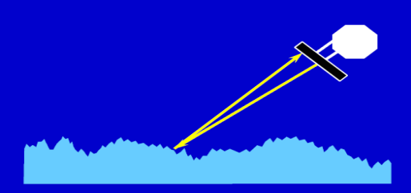
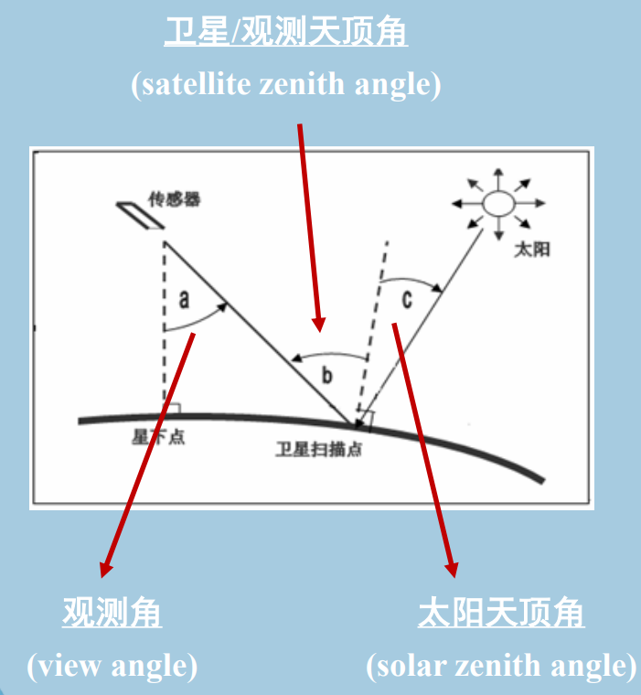

卫星海洋学mooc学习
1.2 遥感技术
| Type/Window | Visible | Infrared | Microwave |
|---|---|---|---|
| Passive | X | X | X |
| Active | X |

2.1 卫星轨道(1)

2.1 卫星轨道(2)
重复周期
传感器的再访问时间≤传感器的重复周期≤卫星的重复周期
-
卫星的重复周期(repeat period)
卫星从某地上空开始运行,环绕地球多圈后回到原地上空时所需要的时间
-
传感器的重复周期(repeat period of sensor)
卫星装载的传感器对目标完成一次全球覆盖的时间
-
传感器的再访问时间(revisit time)
地球上某一局部地点被传感器先后两次观测的时间区间
3.1 气象卫星和主要传感器

3.2 水色卫星和主要传感器

4.1 海洋卫星简介

高度计

搭载高度计的卫星，黄色部分为高度计专用卫星，运行在高度计卫星轨道：

散射计
与高度计不同，散射计为宽刈幅主动雷达。
装载散射计的卫星，黄色部分在轨运行

SAR卫星


微波辐射计

4.2 中国海洋卫星的发展
- 均为太阳同步极轨卫星
- 风云三号系列气象卫星上也装载了兼具全球水色观测能力的中分辨率成像光谱仪

海洋水色卫星：HY-1卫星
HY-1A
-
中国第一颗用于海洋水色探测的试验型业务卫星
-
十波段海洋水色扫描仪（COCTS）——星下点分辨率1.1km

-
四波段海岸带成像仪CZI_——星下点分辨率250m

HY-1B
-
1A的后续星
-
COCTS幅宽增加到3000 km,重复观测周期由3天缩短为1天
-
CZI的光谱分辨率由80nm提升至20nm
HY-1C
- 1C/D卫星工程上采用上、下午卫星组网，可增加观测次数，提高全球覆盖能力
- 有效载荷：
- 十波段海洋水色扫描仪COCTS：信噪比大幅提升
- 四波段海岸带成像仪CZl
- 分辨率由250m提高至50m
- 刈幅由500km扩展至1000km
- 紫外成像仪
- 星上定标光谱仪
- 船舶自动识别系统
- 卫星技术状态达到了国际先进水平,使中国成为继美国之后,能提供每天全球海洋空间全覆盖海洋水色卫星资料的国家。
海洋动力环境卫星：HY-2卫星
HY-2A
-
我国第一颗海洋动力环境卫星
-
有效载荷：
-
雷达高度计

-
微波散射计

-
扫描微波辐射计

-
HY-2B
- 我国第二颗海洋动力环境卫星
- 有效载荷（相比于2A）：
- +数据收集系统
- +船舶自动识别系统AIS
CFOSAT
-
中法两国合作研制的首颗卫星
-
中国提供：

-
法国提供：

海洋监视监测卫星：GF-3卫星
-
中国首颗分辨率达到1m的民用C波段多极化SAR卫星
-
特点：
- 多模式:具有12种成像模式,在轨SAR卫星中成像模式最多
- 高空间分辨率：最高为1米
- 宽测绘带:最大幅宽650 km
- 多极化:单、双、四极化方式
- 长寿命:设计寿命为8年
- 高技术指标:主要设计指标达到或超过国际在轨同类卫星水平
-
卫星观测示意图：

5.1 电磁波的波段与波动方程
- 电磁波的波段
- 热红外对应地表辐射

- 微波波段

- 复折射率n
- 实部表示电磁波在两介质的界面传播速度和方向的变化
- 虚部表示电磁波在介质内部传播的衰减程度
5.2 辐射术语
5.2.1 极化(Polarization)
-
定义：如果一束平面电磁波的电场矢量都在一个平面内,则称之为线性极化或线性偏振的。
-
任何线性极化的电磁波都可分解为两个部分:
- 水平极化(horizontal polarization)
- 垂直极化(vertical polarization)
极化状态根据电场方向与参考平面的关系来定义
-
参考平面：由两条直线确定,一条是海表面的垂线0Z,另一条是入射或离开海面的电磁波束所在的直线
- 水平极化：电场矢量与参考平面垂直
- 垂直极化：电场矢量位于参考平面内或与参考平面平行

5.2.2 立体角(Solid Angle of Observation)
-
卫星/观测的天顶角(satellite zenith angle) b
描述卫星观测方向与被观测海面法线之间的夹角(对雷达,也称入射角)
-
太阳天顶角(solar zenith angle) c
代表太阳到被观测海面的光束方向与被观测海面法线之间的夹角
-
观测角(view angle) a
描述卫星观测方向与星下点海面法线之间的夹角
5.3 辐射术语②
发射率(emissivity)
5.4 基尔霍夫定律
-
基尔霍夫定律(Kirchhoff,1859)基本表达:
如果介质处于局部热力学平衡条件下，那么它吸收能量的速率和 辐射能量的速率相等，即
- 既可应用于两介质界面处，也可应用于某介质内部
- 基尔霍夫定律是海表面物理量遥感机理的基础之一
- 地球表面温度变化的时间尺度 >> 遥感仪器的一次测量需要的时间区间，因此，在遥感计算中，地球表面的局部热力学平衡条件得到普遍满足。
-
推广公式1—适用于两介质界面处
- 为发射率，为菲涅尔反射率
-
推广公式2—适用于介质内部
 wechat
wechat alipay
alipay